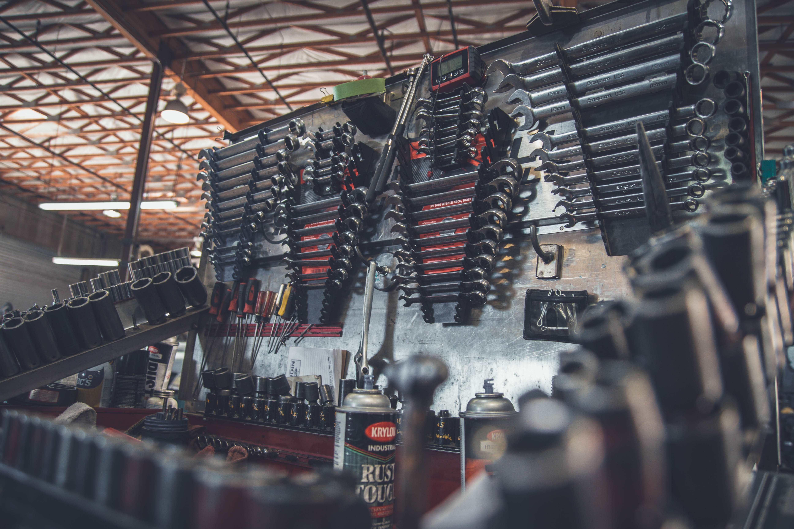

Meistä
Ruosteinen Rauta Oy on perustettu 1958. Myymälästämme löydät erittäin laadukkaita rauta ja metallialan tarvikkeita sekä palveluita kaikkeen rakentamiseen – oli kyse sitten korjaamisesta, remontoimisesta tai uuden rakentamisesta suurissa tai pienissä kohteissa. Meillä asiat hoituvat tutulla ammattitaitoisella tavalla alusta loppuun ja kokeneet ammattilaiset auttavat sinua löytämään parhaat ratkaisut, rakennusmateriaalit tuotteet sekä koneet ja vuokralaitteet.
Myymälämme valikoimasta saat kaiken yhdellä kertaa suuriin ja pieniin rakennus-, remontointi- ja sisustusprojekteihin ulos ja sisälle. Yrityksemme arvot ovat kestävän kehitys, osaava ja hyvinvoiva henkilökunta sekä työturvallisuus.
Oikein rakentaminen onnistuu hyvillä ratkaisuilla - Tervetuloa asioimaan Ruosteiseen Rautaan!
Ruosteinen Rauta on Porin Yrittäjien jäsenyritys. Tutustu Porin Yrittäjien toimintaan: https://www.yrittajat.fi/paikallisyhdistykset/porin-yrittajat/

Historia
Vuonna 1958 avattiin ensimmäisen kerran Ruosteinen Rauta Oy:n myymälä Porin kauppatorille, osoitteeseen Pohjoiskauppatori, 28100 Pori. Tässä osoitteessa myymämme toimi aina vuoteen 2020 asti palvellen ensimmäisenä rautakauppana Porilaisia. Myymälämme on toiminut vuodesta 2020 alkaen osoitteessa Urheilutie 1, 28500 Pori, jolloin avasimme supermyymälän – joka on yksi pohjoismaiden suurimpia rauta ja metallialan myymälöitä. Vuonna 2020 laajensimme palveluihimme myös kone ja laitteistovuokrauksen kaikkeen rakentamiseen.
Yrityksen perustaja Rauno Rauta on palvellut asiakkaita vuodesta 1958 ja vuonna 2022 Tuukka Rauta jatkaa yrityksen ohjaksissa Reino Raudan jäädessä eläkkeelle. Tuukka Rauta on toiminut yrityksessä jo vuodesta 2000. Vuonna 2021 yrityksessämme työskenteli 100 alan ammattilaista palvellen asiakkaitamme rautaisella ammattitaidolla.
Yrityksemme ideana on alusta lähtien tarjota rakennus ja metallialan tuotteita ja palveluita edulliseen hintaan. Palveluumme on aina kuulunut ammattitaitoinen opastus ja asiantuntemus, jota asiakkaamme useiden sukupolvien ajan ovat hyödyntäneet projekteissaan. Voimmekin rehellisesti sanoa, että tunnemme alan läpikotaisin ja tämän pitkän kokemuksen tuomalla varmuudella pystymme tarjoamaan asiakkaillemme kaikki rauta ja metallialanpalvelut luotettavasti ja laadukkaasti – jo vuodesta 1958.


Suurhanke: Helsinki – Tallinna Silta / Valtakunnan Silta Oy
Massiivinen, reippaan punainen Tallinnan silta avattiin liikenteelle tammikuussa 2020. Siltahanke on yksi Suomen ja Viron suurimpia yhteisiä rakennushankkeita. Tähän merkittävään rakennushankkeeseen osallistuivat kaikki suurimmat rakennusyhtiöt ja toimijat Suomesta ja Virosta. Ruosteinen Rauta Oy: toimitti kaikki sillan kaiteitten terärakenteiden tukevat pultit ja kaapelien suojaputket pääurakoitsija Valtakunnan Sillat Oy:lle. Pultti ja suojaputkitoimitukset saatiin toimitettua aikataulun mukaisesti.
Valtakunnan Sillat Oy valitsi Ruosteinen Rauta Oy:n pultti ja suojaputkitoimittajaksi aikaisemman yhteistyön perusteella luottaen, että hankkeen tiukassa aikataulussa pysytään, kun pultit ja suojaputkitoimituksissa on luotettava kumppani.
Seppo Silta kertookin yhteistyöstä ja toimituksista seuraavasti ”Ruosteinen Rauta yhtenä suurimpana rautakauppa ja metallialan toimittajana pystyy toimittamaan suuria määriä rakennustarvikkeita kriittisiin projekteihin. Yhteistyö Ruosteisen Raudan kanssa on toiminut aina hyvin ja tehokkaasti”.

Konepalvelut vuokraus / Koneline Oy
Koneline Oy tarjoaa maansiirto ja maatyö palveluita rakentajille. Vuonna 2021 KoneLine Oy luopui omista maansiirtokoneistaan ja käyttää urakoissaan Ruosteinen Rauta Oy:n vuokralaitevalikoimaa.
”Ruosteinen Rauta Oy” toimittaa meille projekteihin tarvittavia laitteistoja ja koneita. Koneet ja laitteet ovat aina toimivia ja hyvin huollettuja. Siirtyessämme vuokrakoneiden käyttöön, olemme pystyneet tarjoamaan maansiirtotöitä erittäin edulliseen hintaan asiakkaillemme. Vuokrakoneiden käytössä pystymme käyttämään ja saamaan käyttöömme juuri oikean laitteen oikeaan aikaan ja tämä luo liiketoimintaan kustannustehokkuutta. Ruosteinen Rauta on merkittävä kumppanimme, joka mahdollistaa toimintamme joustavuuden. Kannattavuutemme on kasvanut 89% kun siirryimme hyödyntämään Ruosteisen Raudan vuokrakonevalikoimaa toiminnassamme. ” Kertoo toimitusjohtaja Jorma Kontio Koneline Oy:stä. Koneline Oy suositteleekin Ruosteisen Raudan konevalikoimaan pienemmille ja suuremmille työmaille.
Palvelut
Rakennustarvikkeet
Ruosteinen Rauta tarjoaa rakennustarvikkeet alan johtavilta merkeiltä nopeasti toimitettuna suoraan työmaalle. Ruosteisen Raudan Rakennustarvikkeet – palvelun avulla rakentaminen on helppoa ja edullista. Laadukkuus ja edullisuus ovat ominaisuuksia, joita ostajat odottavat rakennustarvikkeilta. Rakennustarvikkeet - valikoimasta löytyy paljon vaihtoehtoja pienempiin tai isompiin rakennus- tai remontointiprojekteihin.
- Perustustarvikkeet
- Rakennusmateriaalit
- Sähkötarvikkeet
- Ilmanvaihto
- Lämmitys
- LVI
- Työkalut ja tarvikkeet
Sisustustarvikkeet
Kun talo on rakennettu, voidaan keskittyä sisustamiseen. Me autamme sinua myös kaikissa sisustamiseen liittyvissä ratkaisuissa. Valikoimaamme kuuluu kaikki sisustukseen tarvittavat tuotteet ja ratkaisut, kuten keittiökalusteet, takat, tapetit, lattiapinnoitteet, laatat, koukut ja maalit.
- Keittiö
- Kylpyhuone ja wc
- Laatat | lattialaatat, seinälaatat, kuviolaatat
- Lattiat | parketit, laminaatit, korkkilattiat, vinyylilattiat
- Ovet
- Kiukaat
- Tapetit
- Koukut naulakot ja hyllyt
- Takat
- Valaistus
Piharakennus
Laajasta valikoimastamme löydät kaiken tarvittavan pihan suunnitteluun ja rakentamiseen.
- Pihakivetys ja päällysteet
- Puutarhakalusteet ja tarvikkeet
- Kylpytynnyrit ja uima-altaat
- Pihavalaisimet
Konevuokraus
Vuokraamme laadukkaat ja turvalliset koneet erikokoisiin projekteihin yrityksille, yhteistyökumppaneille ja yksityisille rakentajille ja remontoijille. Varaa ja tilaa tarvitsemasi kone tai laite, kuljetamme koneen kohteeseen sovittuna ajankohtana. Esimerkkejä koneista ja laitteistamme:
- Henkilönostimet
- Nosto- ja siirtokalusto
- Maantiivistyskalusto
- Maansiirtokalusto
- Peräkärryt
- Avant
- Generaattorit